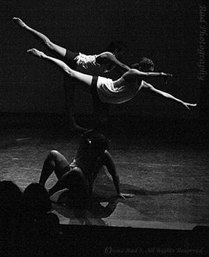

|
Genesis
A New Beginning-wash your hands clean of the past and embrace the new.
Contemporary dance with hip hop choreographed by Melanie Kalia and James Ervin
Featuring Mandi Molinar, Victoria Smalc, Radena Salmon, Candace Yoshioka, and Sang Hong
|
 |
|
Director/Choreographer
Melanie Kalia
Advanced Lyrical/ Contemporary
Melanie Kalia - New York, NY - Melanie has performed in numerous venues throughout the US, and including Prague, CZ. Credits include: Saturday Night Live with Christina Aguilera, Tina Novak and the Roc Project "Never" tour, Radio Disney's Back to Back tour, ESPN Zone's Jet Jackson launch sponsored by Disney, and more. Melanie has also performed with Tracie Stanfield's Synthesis Dance Project in Dance As Life, Underground Dance Project, Cool NY Dance Festival, White Wave Festival, International Dance Festivals, and numerous other dance concerts under Tracie's direction. Currently perfoming with Calvin Wiley's, Calvinography, sponsored by Equinox Fitness clubs, James Ervin's, Danceology, perfoming in Real Dance Productions', Gym Crew Challenge NYC Teaching credits include: Showstopper's Dance Competition, Jackie O'Neal's in Birmingham, AL, Beverly Rogers' Academy, Paducah, KY, International Dance Festival, Prague, CZ, Broadway Dance Center, Equinox Fitness, Turning Point, FL, Steps on Broadway, Ms Doreen's, NJ and many more.
|